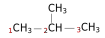
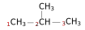

Lycée Taiarapu Nui
Terminale Générale
Spécialité Physique – Chimie
2020-2021
Terminale Générale
Spécialité Physique – Chimie
2020-2021
C.1 Modélisation des transformations acide-base
Activité 1
En solution aqueuse :
(1) Le sulfure d'hyfrogène $H_2S$ peut former l’ion hydrogénosulfure $HS^-$.
(2) L’ammoniac $NH_3$ peut former l’ion ammonium $NH_4^+$.
(3) L’eau peut former l’ion hydronium $H_3 O^+$.
(4) L’eau peut former l’ion hydroxyde $HO^-$.
(1) Le sulfure d'hyfrogène $H_2S$ peut former l’ion hydrogénosulfure $HS^-$.
(2) L’ammoniac $NH_3$ peut former l’ion ammonium $NH_4^+$.
(3) L’eau peut former l’ion hydronium $H_3 O^+$.
(4) L’eau peut former l’ion hydroxyde $HO^-$.
1) Écrire les équations des réactions.
Activité 2
On considère les couples acide-base suivant
$H_2 O(l)/HO^- (aq)$ et $NH_4^+ (aq)/NH_3 (aq)$
2) Identifier les acides et les bases.
3) Compléter les demi-équations (1) et (2) puis
sur la 3e ligne, additionner les réactifs et les produit.
| $H_2O \ $ | $\rightleftarrows$ | ....................... | (1) |
| ....................... | $\rightleftarrows$ | $ \ NH_4^+(aq)$ | (2) |
| ....................... | $\rightarrow$ | ....................... | (1)+(2) |
Exercice 1
4) Écrire l’équation de la réaction entre l’eau
du couple $H_2 O(l)/HO^- (aq)$ et l’ammoniac
du couple $NH_4^+ (aq)/NH_3 (aq)$.
5) Écrire l’équation de la réaction entre
l’acide du couple $H_3 O^+ (aq)/H_2 O(l)$
et la base du couple $HSO_3^- (aq)/SO_3^{2-} (aq)$.
6) Écrire l’équation de la réaction entre l’acide du
couple $H_3 PO_4 (aq)/H_2 PO_4^- (aq)$ et la base
du couple $HCN(aq)/CN^- (aq)$.
7) Écrire l’équation de la réaction entre
l’acide du couple $H_2 SO_4 (aq)/SO_4^{2-} (aq)$
et la base du couple $H_2 O(l)/HO^- (aq)$.
Les attendus
# Définir un acide /une base
# Définir espèce amphotère
# Ecrire une demi-équation à partir d’un couple
# Ecrire une équation acide-base connaissant les couples et les réactifs
# Définir espèce amphotère
# Ecrire une demi-équation à partir d’un couple
# Ecrire une équation acide-base connaissant les couples et les réactifs
Activité 3
Document 1 − Formule de Lewis
La formule (ou schéma ou structure) de Lewis est une
représentation, en deux dimensions, de la structure
électronique externe des atomes composant une molécule.
Exemple de la molécule d'ammoniac :
Exemple de la molécule d'ammoniac :
| Molécule | Ammoniac $NH_3$ | |||
| Atomes | $_1H$ | $_1H$ | $_1H$ | $_7N$ |
| Config. électronique | $1s^1$ | $1s^1$ | $1s^1$ | $1s^2 2s^2 2p^3$ |
| Électrons de valence | 1 | 1 | 1 | 5 |
| Électrons manquants (règles du duet et de l'octet) | 1 | 1 | 1 | 3 |
| Nombre total d'électrons de valence $n_t$ | $n_t=1+1+1+5=8$ | |||
| Nombre de doublets | $n_t/2= 8/2=4$ | |||
| Schéma de Lewis |

1 doublet non liant 3 liaisons covalentes |
|||
Document 2 − Polarité d'une molécule
Pour la molécule $A-B$, si l’atome $B$ est plus électronégatif que $A$,
il attire davantage le doublet. Il apparait une charge partielle
négative notée $δ^-$ sur l’atome $B$, et une charge partielle positive
$δ^+$ sur l’atome $A$. L’apparition des charges partielles rend la
liaison polaire : $A^{δ+}-B^{δ-}$.
| H 2.20 |
||||||
| Li 0.98 |
Be 1.57 |
B 2.04 |
C 2.55 |
N 3.04 |
O 3.44 |
F 3.98 |
| Na 0.93 |
Mg 1.31 |
Al 1.61 |
Si 1.90 |
P 2.19 |
S 2.58 |
Cl 3.16 |
Document 3 − Acide éthanoïque
L’acide éthanoïque (appelé aussi acide acétique) est l’espèce
responsable de l’acidité du vinaigre et lui donne cette odeur
caractéristique. Il a pour formule semi-développée :
 .
L’acide éthanoïque est un acide au sens de Brönsted.
Cette caractéristique est due à la forte polarisation de la
liaison entre un atome d’oxygène et un atome d’hydrogène.
.
L’acide éthanoïque est un acide au sens de Brönsted.
Cette caractéristique est due à la forte polarisation de la
liaison entre un atome d’oxygène et un atome d’hydrogène.
.
Document 4 − Les amines
Une amine est une espèce organique dérivée de l’ammoniac dont au
moins un atome d’hydrogène est remplacé par un groupe carboné
($CH_3-$ ;$CH_3-CH_2-$; etc). Le plus simple groupe carboné est le
groupe méthyle $CH_3-$.
Selon le nombre de groupe carboné présent sur l'atome d'azote, on parle d'amine primaire, secondaire et tertiaire. Par exemple la triméthylamine est une amine tertiaire composé de groupe carboné méthyle.
Selon le nombre de groupe carboné présent sur l'atome d'azote, on parle d'amine primaire, secondaire et tertiaire. Par exemple la triméthylamine est une amine tertiaire composé de groupe carboné méthyle.
8) Représenter les schémas de Lewis de l'acide acétique,
de l'eau et de la triméthylamine.
9) Identifier l'atome d'hydrogène responsable du caractère
acide de l'acide éthanoïque et en déduire le schéma de Lewis
de sa base conjuguée.
10) D'après vous la triméthylamine peut-elle être acide ? Justifier.
11) En fait la triméthylamine est basique.
En déduire le schéma de Lewis de son acide conjugué.
12) Justifier le caractère amphotère de l'eau.
Activité 4
Document 1 − Préfixes
| Nombre d'atome de carbone | 1 | 2 | 3 | 4 | 5 | 6 | 7 | 8 | 9 |
| Préfixe | Méth | Éth | Prop | But | Pent | Hex | Hept | Oct | Non |
Document 6 − Les alcanes linéaires
Les alcanes sont les plus simples des composés organiques.
Ils ne sont formés que d’atomes de carbone (reliés par des liaisons
simples) et d’atomes d’hydrogène.
Pour nommer un alcane linéaire on compte le nombre d’atome de carbone le constituant, puis on utilise le préfixe correspondant en ajoutant la terminaison « ane ».
Exemple : $CH_3$
On compte 1 atome de carbone, le préfixe correspondant est « méth », le nom de cet alcane est le méthane.
Pour nommer un alcane linéaire on compte le nombre d’atome de carbone le constituant, puis on utilise le préfixe correspondant en ajoutant la terminaison « ane ».
Exemple : $CH_3$
On compte 1 atome de carbone, le préfixe correspondant est « méth », le nom de cet alcane est le méthane.
13) Écrire la formule semi-développée du butane.
14) Donner le nom de cette molécule :
Document 7 − Groupes alkyles et alcanes ramifiés
Un alcane est ramifié si l’un de ses atomes de carbone est relié à
plus de deux atomes de carbone. Le groupe qui forme la ramification est
appelé groupe alkyle. Le nom d’un groupe alkyle est obtenu en prenant
le préfixe correspondant au nombre de carbone le constituant et en
ajoutant la terminaison « yle ».
Exemple pour un carbone c’est le groupe méthyle.
Lorsqu’on nomme une molécule :
• On cherche la chaine carbonée la plus longue et on numérote les atomes de carbone.
• On cherche les groupes alkyles formant les ramifications en notant le numéro du carbone auxquels ils sont rattachés.
• Le nom de la molécule est formé :
(n°carbone) – (nom du groupe alkyle sans le « e » final) (nom de l’alcane).
Exemple :

• La chaine carbonée la plus longue (ici numéroté de 1 à 3) correspond au propane.
• Un groupe méthyle est attaché au carbone 2.
• Le nom de la molécule est 2-méthylpronane.
Exemple pour un carbone c’est le groupe méthyle.
Lorsqu’on nomme une molécule :
• On cherche la chaine carbonée la plus longue et on numérote les atomes de carbone.
• On cherche les groupes alkyles formant les ramifications en notant le numéro du carbone auxquels ils sont rattachés.
• Le nom de la molécule est formé :
(n°carbone) – (nom du groupe alkyle sans le « e » final) (nom de l’alcane).
Exemple :

• La chaine carbonée la plus longue (ici numéroté de 1 à 3) correspond au propane.
• Un groupe méthyle est attaché au carbone 2.
• Le nom de la molécule est 2-méthylpronane.
15) Écrire la formule semi-développée du 3-éthylpentane.
16) Écrire la formule semi-développée du 2-méthylbutane.
17) Quel est le nom de l’alcane suivant :
18) Écrire la formule semi-développée du 2,2-diméthylpropane.
Document 8 − Nomenclature des acides carboxyliques
et de leurs bases conjuguées
Le nom d’un acide carboxylique s’obtient à partir du nombre d’atome
de carbone de la chaine comportant le groupe carboxylique.
Il se met sous la forme suivante :
(acide)(nom de l’alcane correspondant sans le « e » final) (terminaison « oïque »).
Exemple :

Un atome de carbone : acide méthanoïque.
Le nom de la base conjugué d’un acide carboxylique est un ion carboxylate.
Le nom dérive de l’acide carboxylique, il a la forme suivante :
(ion)(nom de l’alcane en remplaçant le « e » final par « oate »)
Exemple :

Ion méthanoate
(acide)(nom de l’alcane correspondant sans le « e » final) (terminaison « oïque »).
Exemple :
Un atome de carbone : acide méthanoïque.
Le nom de la base conjugué d’un acide carboxylique est un ion carboxylate.
Le nom dérive de l’acide carboxylique, il a la forme suivante :
(ion)(nom de l’alcane en remplaçant le « e » final par « oate »)
Exemple :
Ion méthanoate
19) Écrire la formule semi-développée de l’acide propanoïque.
20) Quel est le nom de la molécule suivante :

21) Donner le nom de sa base conjuguée.
Document 9 − Nomenclature des amines primaires
Le nom de l’amine est obtenu à partir du nom de l’alcane en remplaçant
le « e » final par « amine ».
Exemple :
Méthanamine
Exemple :
Méthanamine
22) Écrire la formule semi-développée de la propanamine.
23) Écrire la formule semi-développée de la butan-2-amine.
Les attendus :
# Représenter le schéma de Lewis et la formule semi-développée d’un acide carboxylique, d’un ion carboxylate, d’une amine et d’un ion ammonium
# Déterminer, à partir de la valeur de la concentration en ion oxonium H3O+, la valeur du pH de la solution et inversement.
# Représenter le schéma de Lewis et la formule semi-développée d’un acide carboxylique, d’un ion carboxylate, d’une amine et d’un ion ammonium
# Déterminer, à partir de la valeur de la concentration en ion oxonium H3O+, la valeur du pH de la solution et inversement.
Exercice 2
Une eau minérale à un $pH=7,4±0,2$.
24) Donner un encadrement de la concentration en ion oxonium
$H_3 O^+ (aq)$. Commenter.
25) Déterminer la concentration massique en ion oxonium $H_3 O^+ (aq)$.
Exercice 3
L’acide nitrique $HNO_3 (l)$ réagit totalement avec l’eau. On prépare $50,0 mL$
d’une solution aqueuse d’un volume de solution contenant $1,0 g$ d’acide
nitrique.
Données : $M(H)=1,0 \, g.mol^{-1}$ | $M(N)=14,0 \, g.mol^{-1}$ | $M(O)=16,0 \, g.mol^{-1}$
26) Déterminer le pH de la solution obtenue.
Exercice 4
Le $pH$ d’une solution de $100 \, mL$ d’acide éthanoïque $C_2 H_4 O_2 (aq)$,
de concentration en soluté apporté $c_a=1,0×10^{-2} \, mol.L^{-1}$ est égale à $2,8$.
27) Écrire l’équation de la réaction entre l’acide et l’eau.
28) Déterminer la quantité initiale d’acide.
29) Établir le tableau d’avancement de cette réaction.
30) En déduire la concentration maximale $[H_3 O^+ ]_{max}$ et
calculer le $pH$.
31) La réaction est-elle total ? Justifier.